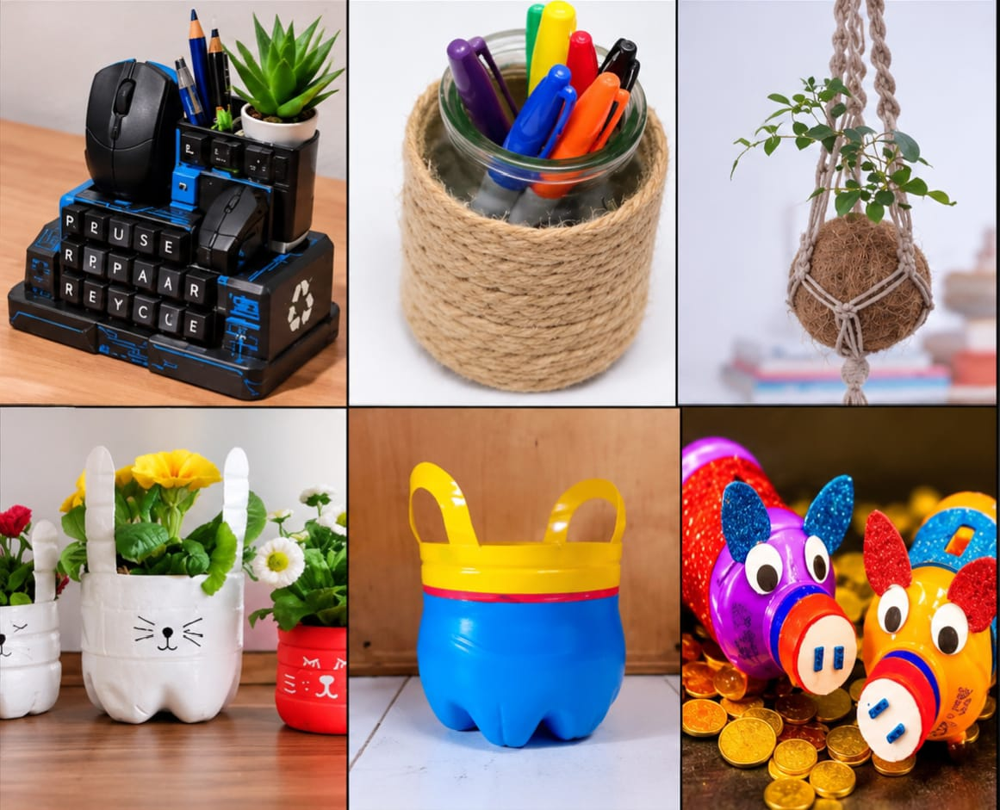
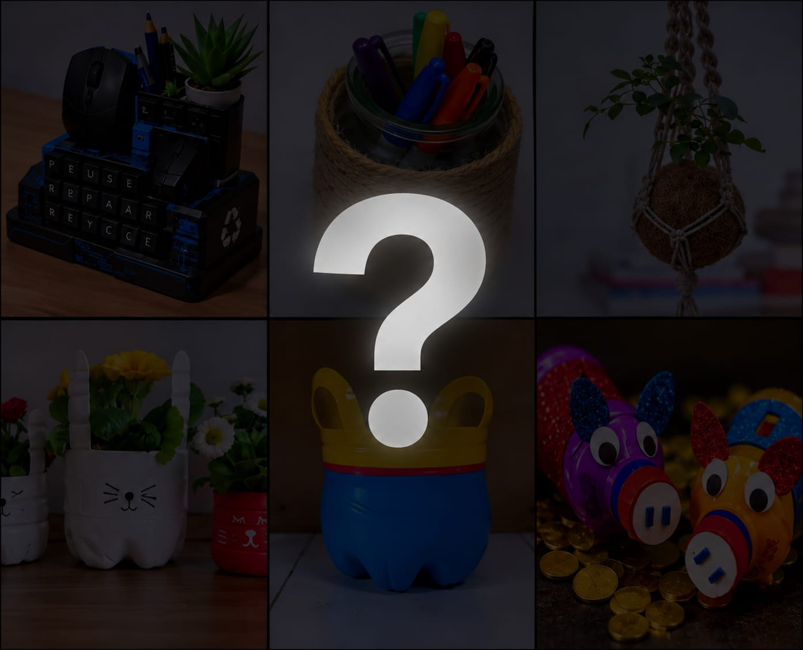
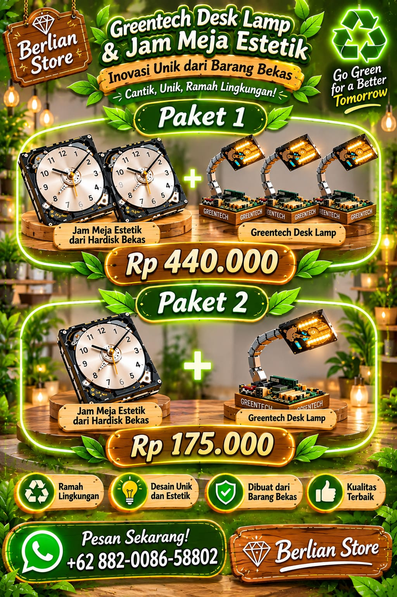
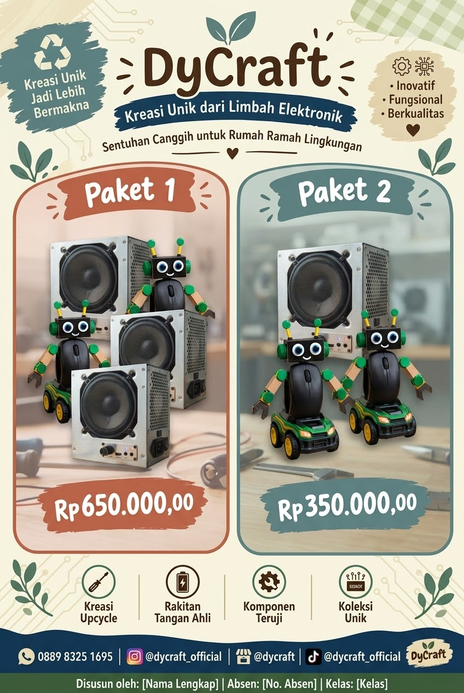
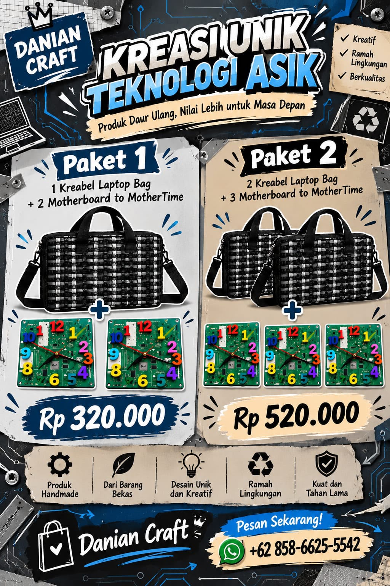

Cerita proyek
Pendahuluan Produk-Produk Recycle
Menjelajahi ide-ide kreatif dalam mengubah sampah jadi karya bernilai tinggi.
Lihat detail ↗Belajar mengolah sampah menjadi produk kreatif yang bermanfaat melalui prinsip 3R (Reduce, Reuse, Recycle). Proyek ini menggabungkan pembelajaran lintas mata pelajaran dengan metode Waterfall.
Jelajahi Karya → Tentang KamiLimbah mouse dan keyboard menjadi masalah utama karena mengandung zat yang sulit terurai bagi lingkungan dan menganggu kesehatan. Jumlahnya terus meningkat seiring dengan perkembangan teknologi yang pesat. Proses daur ulangnya yang rumit dan mahal menyebabkan banyak keyboard dan mouse dibuang sembarangan, mencemari tanah dan air
Arah solusi
Pengelolaan limbah keyboard dan mouse perlu dilakukan dari berbagai sisi: membangun kebiasaan yang tepat, membuka jalur daur ulang, dan mendukung pemanfaatan kembali.
Sediakan sistem pengumpulan dan pengolahan limbah elektronik yang lebih mudah dijangkau.
Jelaskan bahaya e-waste dan cara membuang atau menyerahkan perangkat elektronik dengan benar.
Manfaatkan komponen motherboard yang masih layak menjadi produk kreatif, seperti jam atau hiasan.
Dorong inovasi teknologi ramah lingkungan serta kebijakan yang membantu pengelolaan e-waste.
Ide sederhana, dampak nyata. Kenali karya yang lahir dari proses belajar dan kepedulian terhadap lingkungan.
Menjelajahi ide-ide kreatif dalam mengubah sampah jadi karya bernilai tinggi.
Lihat detail ↗
Kreasi unik hiasan periferal bunga dan pensil dari keyboard dan mouse bekas, bergaya dan ramah lingkungan!
Lihat detail ↗
Kesimpulan tentang produk yang dipilih dan alasan di balik keputusan tim.
Lihat detail ↗Mendesain iklan bundling produk daur ulang kolaboratif Matematika.

Sistem persamaan: 2x + 3y = 440.000 dan x + y = 175.000. Hasilnya x = Rp.85.000 dan y = Rp.90.000.
Misal:
x = Jam Harddisk
y = Lampu Meja
2x + 3y = 440.000
x + y = 175.000
x = 175.000 − y
2(175.000 − y) + 3y = 440.000
350.000 + y = 440.000
y = 90.000
x = 175.000 − 90.000 = 85.000
x = 85.000
y = 90.000

Sistem persamaan: 3x + 2y = 650.000 dan x + 2y = 350.000. Hasilnya x = Rp.150.000 dan y = Rp.100.000.
Misal:
x = Sound System Bluetooth dari CPW Bekas
y = Robot dari Mouse Bekas
Sound System Bluetooth dari CPW Bekas seharga Rp.150.000
Robot dari Mouse Bekas seharga Rp.100.000
3 Sound System Bluetooth dari CPW Bekas dan 2 Robot dari Mouse Bekas seharga Rp.650.000
1 Sound System Bluetooth dari CPW Bekas dan 2 Robot dari Mouse Bekas seharga Rp.350.000
3x + 2y = 650.000
x + 2y = 350.000
3x + 2y = 650.000
x + 2y = 350.000 −
-----------------------
2x = 300.000
x = 300.000 ÷ 2
x = 150.000
x + 2y = 350.000
150.000 + 2y = 350.000
2y = 350.000 − 150.000
2y = 200.000
y = 200.000 ÷ 2
y = 100.000
Jadi harga barang x sebesar Rp.150.000 dan harga barang y sebesar Rp.100.000.

Sistem persamaan: x + 2y = 320.000 dan 2x + 3y = 520.000. Hasilnya x = Rp.80.000 dan y = Rp.120.000.
Misal:
x = Kreabel Laptop Bag
y = Motherboard to Mother Time
Kreabel Laptop Bag seharga Rp.80.000
Motherboard to Mother Time seharga Rp.120.000
1 Kreabel Laptop Bag dan 2 Motherboard to Mother Time seharga Rp.320.000
2 Kreabel Laptop Bag dan 3 Motherboard to Mother Time seharga Rp.520.000
x + 2y = 320.000
2x + 3y = 520.000
x + 2y = 320.000 (×3)
2x + 3y = 520.000 (×2)
-----------------------
3x + 6y = 960.000
4x + 6y = 1.040.000 −
-----------------------
-x = -80.000
x = 80.000
x + 2y = 320.000
80.000 + 2y = 320.000
2y = 320.000 − 80.000
2y = 240.000
y = 240.000 ÷ 2
y = 120.000
Jadi harga barang x sebesar Rp.80.000 dan harga barang y sebesar Rp.120.000.
Explanation text tentang proses perubahan limbah elektronik menjadi produk baru yang bermanfaat.
Explanation text.
Electronic waste remains a pressing environmental issue alongside fast‑growing digital technology. Old hard‑drives and discarded circuit‑board components are commonly thrown away once devices break or get replaced. Even so, many solid parts from these old electronics still have reuse potential. One practical creative solution is turning used hard‑drive casings and circuit‑board scraps into an aesthetic desk clock paired with a mini desk‑lamp decoration. This idea proves that thrown‑away electronic parts can be rebuilt into beautiful, usable tabletop items.
The process starts by gathering intact used hard‑drive units and leftover circuit‑board pieces. Usable sections are picked out, thoroughly cleaned, and separated from broken wiring or dangerous electronic parts. Next, the selected components are prepared to build the core sections of the set. A hard‑drive plate becomes the clock base, while circuit‑board fragments form the foundation for the small desk lamp. At this step, the original function of these computer parts shifts completely toward a new decorative purpose.
The cleaned hard‑drive and circuit‑board pieces are assembled carefully to finish the decoration set. The hard‑drive assembly is fitted with a clock movement to work as a functional desk clock, and the circuit‑board base is attached with a small lamp module for lighting. Every piece is fixed neatly to keep its original tech‑style look and make the set unique. After all components are secured properly, a complete desk‑clock and desk‑lamp decoration set is finished.
Finally, discarded hard‑drive and circuit‑board materials turn into a desk‑clock plus desk‑lamp decoration that holds both practical and aesthetic value. People can place this set on their study or work desks to tell time and add soft lighting. This craft helps cut down electronic waste and inspires others to repurpose old electronics instead of throwing them out. Hence, recycling used hard‑drive and circuit‑board parts into functional desk decorations supports sustainable habits and a healthier environment.
Explanation text.
Electronic waste (e-waste), such as broken keyboards and unused computer mice, often accumulates and poses environmental challenges if not managed properly. However, these components are made of durable plastic materials that still hold high potential for reuse. Through a creative approach, unused keyboards and mice can be repurposed into a functional desk organizer with a futuristic aesthetic. This transformation demonstrates how computer hardware waste can be converted into useful and valuable products.
The transformation process begins by disassembling the unused keyboards and mice, followed by thoroughly cleaning all surface dust. Keycaps are removed and sorted, particularly letter keys selected to spell out environmental themes such as "REUSE", "REPAIR", and "RECYCLE". The internal electronic circuits of the mouse bodies are removed so they can serve as holders or docks. At this stage, the original function of the computer peripherals as input devices completely changes into structural and decorative elements.
The cleaned components are then assembled onto a multi-tiered base structure. The mouse holder is secured on top to hold active mice or stationary items. On the front section, the keyboard keys are neatly attached to form inspirational keywords. Additional mini-compartments are integrated to accommodate small potted plants (such as succulents), pens, and pencils. Blue line accents and recycling symbols are applied to enhance the tech-inspired, eco-friendly aesthetic.
As a result, old keyboards and mice are transformed into a multi-functional desk organizer that holds stationery, accommodates a mini plant pot, and serves as unique desk decor. This product not only helps keep workspace essentials organized but also stands as a practical example of reducing electronic waste through reuse and recycle principles.
Explanation text.
Electronic waste is one of the environmental problems caused by the rapid development of technology. Old computer peripherals, such as keyboards, mice, and computer accessories, are often discarded when they are damaged or no longer needed. However, some of their plastic parts can still be reused. One creative way to manage this waste is by transforming old computer peripheral materials into a mini flower and pencil decoration. This transformation shows how electronic waste can become a useful and attractive product.
The transformation begins by collecting unused computer peripheral materials. The plastic parts are selected, cleaned, and separated from other electronic components. After that, the materials are prepared to become the main parts of the decoration. Some plastic pieces are used as the base and pencil holder, while other materials are used to create decorative details. At this stage, the original function of the computer peripherals changes into something new and creative.
The cleaned plastic materials are arranged and combined to create a mini decoration. The main part is used as a container for pencils, while a small artificial flower is placed on top to make the product more attractive. The peripheral materials are attached and decorated neatly to create a unique technological appearance. Once all the parts are firmly attached, they become one complete mini flower and pencil decoration.
As a result, unused computer peripheral materials are transformed into a mini flower and pencil decoration that has both functional and aesthetic value. The product can be used as a pencil holder and a decorative item for a study desk. This transformation helps reduce electronic waste and encourages people to reuse materials that are still useful. Therefore, recycling computer peripheral materials into creative products is one way to support a cleaner and more sustainable environment.


.jpeg)